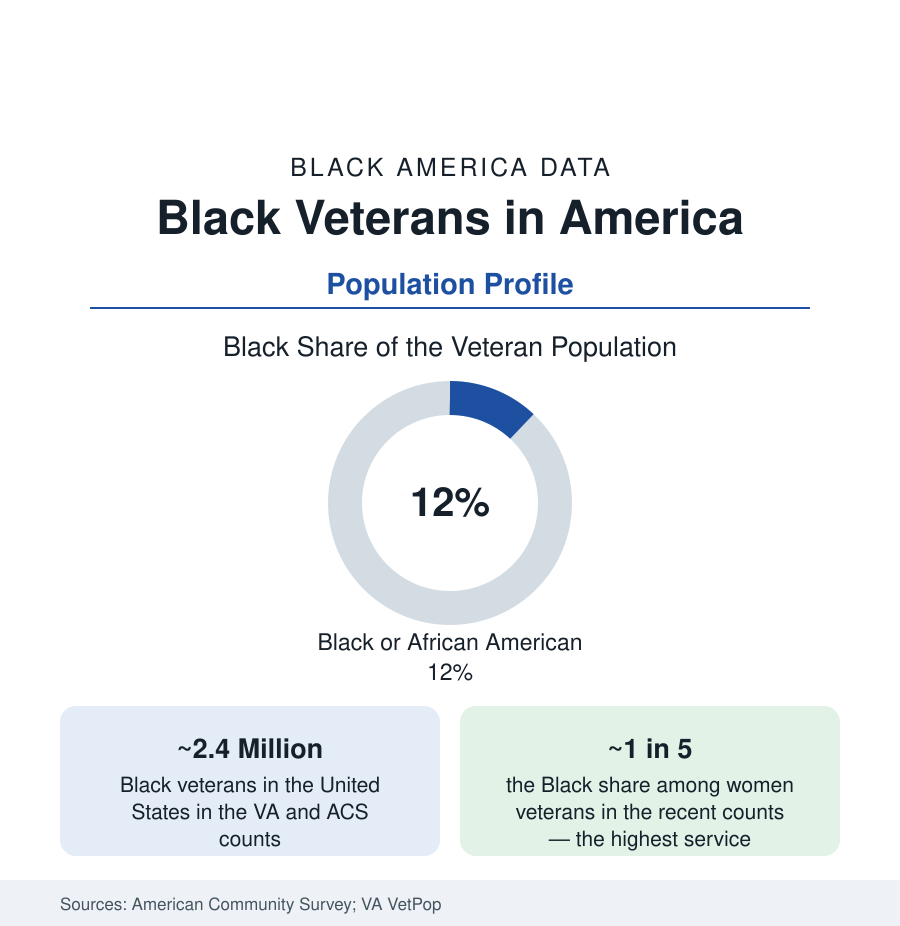

Black Census
Black Veterans: Two and a Half Million Who Served
About 2.4 million Black veterans live in the United States — roughly one veteran in eight — with the highest service rates of any group among women. The demographic profile.

About 2.4 million Black veterans live in the United States — roughly one in eight of the nation's veterans — the demographic residue of a service relationship that runs from the Revolution's Black patriots through the Buffalo Soldiers to the all-volunteer force, in which Black Americans, and Black women above all, serve at rates above their population share. The employment section counts the serving; this article profiles the served-and-home: who the Black veteran population is, where it lives, and what its data show about the bargain the country strikes with those who enlist.
The Composition: Eras, Branches, and the Women of the Ranks
The VA's VetPop model and the ACS veteran tables draw the profile: the Black veteran population skews younger than the veteran whole (the Vietnam cohort that dominates the overall veteran count is whiter than the post-1973 all-volunteer cohorts that followed — each successive era's veteran population more Black than the last, a cohort replacement the projections carry forward), and it is the most female of the major veteran groups: Black women constitute roughly a fifth of all women veterans in the recent counts, the demographic signature of Black women's enlistment rates — the highest of any race-sex group in the Defense Department's accession data across most of the modern era. The branch distribution follows the accession patterns (Army-heavy in the demographic reports), the officer share trails the enlisted share in the familiar pattern (the military article's promotion file), and the disability-rating data (the VA's compensation rolls) record Black veterans' service-connected disability prevalence and ratings — with the adjudication-equity studies of the current era auditing the grant-rate data by race, a live file in the VA's own reporting.
Geography and the Economic Profile
The map is the service map made civilian: Black veterans concentrate where the bases and the retirements are — the South's base belt (the Fayetteville, San Antonio, Hampton Roads, and El Paso profiles of the cities section are substantially veteran geographies), the Washington region's federal corridor, and the historic home-state ties of the Southern-born service generations. The economic data give the veteran bargain its Black ledger: veteran status narrows the racial gaps the census section tracks — Black veterans' incomes, homeownership (the VA loan's zero-down machinery, whose Black usage rates the mortgage data show at the program's highest), and educational attainment all run above Black non-veterans' in the ACS comparisons, the closest thing the demographic record offers to a controlled read on the mobility machine the military represents (with the self-sorting caveat the researchers always attach: those who enlist and complete service differ from those who do not, before the first paycheck). The homelessness file is the ledger's debit column: Black veterans are heavily overrepresented in the VA/HUD homeless counts relative to their veteran share — roughly a third of homeless veterans in the point-in-time data — the disparity the supportive-housing programs' targeting follows.
Benefits, Usage, and the Trust Data
The benefits system is where the population meets the state it served: VA healthcare enrollment, disability compensation, the GI Bill's education benefits (whose modern usage data show Black veterans enrolling at high rates — with the completion and institution-quality audits the education file tracks, including the for-profit sector's disproportionate recruitment of Black veterans in the oversight reports), and home loans. The usage data carry the trust file in numbers: enrollment and satisfaction measures by race in the VA's own surveys, the historical shadow (the WWII GI Bill's locally administered exclusions — the housing and education benefits' racially uneven delivery documented by the historians — standing behind the current system's equity audits), and the outreach infrastructure (the VA's Center for Minority Veterans, the Black veterans' organizations — the National Association for Black Veterans and the post networks of the Legion and VFW traditions, whose segregated-post history the archive holds). The representation inside the VA's own workforce and leadership completes the institutional picture the VetPop projections extend: as the veteran population diversifies cohort by cohort, the Black share of the whole rises toward the accession shares of the recent decades — toward one in six or beyond by mid-century in the model's runs.
Reading the Veteran Numbers
Two and a half million people, a fifth of the women who ever served, a homeownership machine and a homelessness disparity in the same file: the Black veteran population is the census section's clearest case of service as a demographic force. They are the community's most direct creditors — the data record what the country owes, what it has paid, and where the account still runs short.
More in Black Census
The Black Population of the United States: Size, Definitions, and Distribution
The Black population of the United States totals 52.8 million — 15.4 percent of the nation. How the Census Bureau defines and counts the population, and where it lives.
Black Median Household Income in the United States
Black median household income stands at $56,490 in the Census Bureau's annual income report — how the figure is measured, how it compares, and what drives it.
The Black Poverty Rate: Levels, Children, and the Long Trend
The official Black poverty rate is 17.1 percent — against 11.1 percent nationally and 7.7 percent for non-Hispanic White Americans. How poverty is measured and what the data show.
Source: U.S. Census Bureau, American Community Survey; U.S. Department of Veterans Affairs National Center for Veterans Analysis and Statistics; Department of Defense demographic reports.